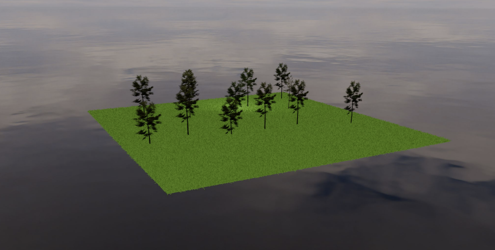
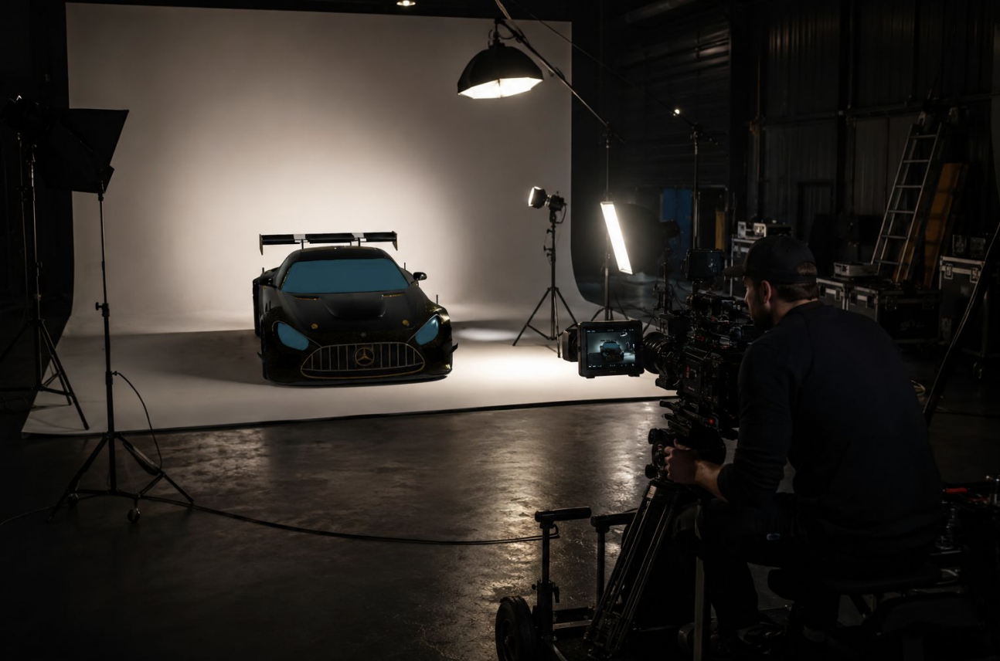
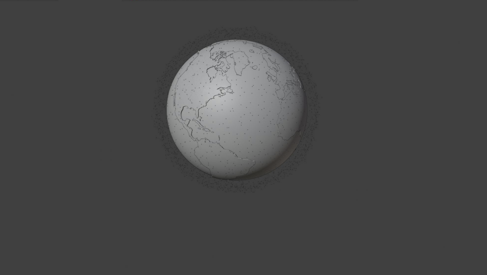
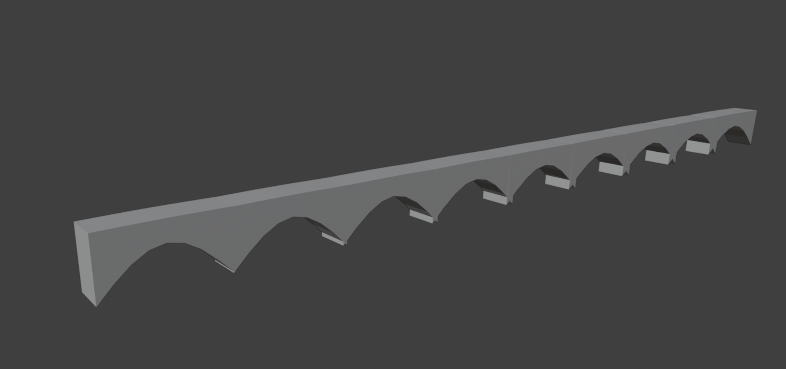
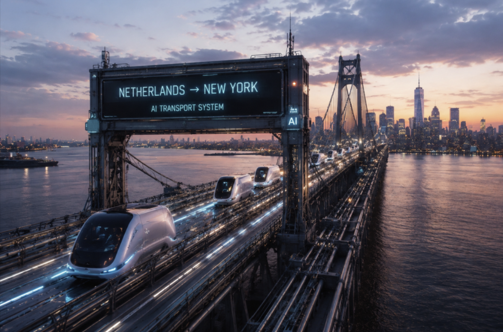
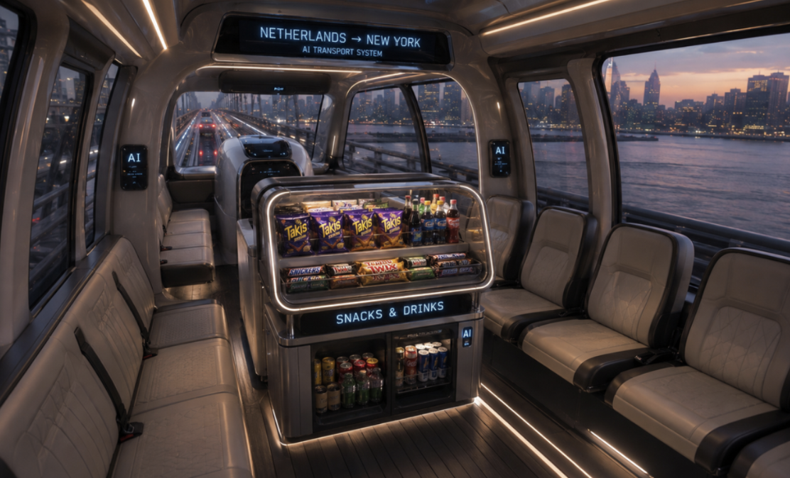
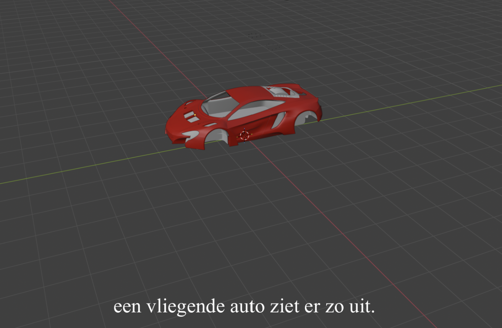

De Toekomst
Groene Steden
In de bovenstaande 3D-scene is te zien hoe verschillende toekomstscenario's samenkomen. Overkoepelend zag ik in hun werk een optimistisch toekomstbeeld waarin technologie niet tegenover de natuur staat, maar juist bijdraagt aan een schonere, groenere en meer samenwerkende wereld.
Het groepje dat deze scene heeft gemaakt vertelde dat zij een toekomst zagen waarin robots een ondersteunende rol zouden spelen, bijvoorbeeld bij het bouwen van gebouwen of het planten van bomen.
Ook kwamen duurzame vormen van transport terug in hun werk, zoals vliegende auto’s die werken op zonne-energie. Volgens hun concepten zou dit het mogelijk maken om sneller te reizen zonder het klimaat te belasten.
Dit groepje had een positieve kijk op de toekomst van de planeet en de natuur. Door een verbeterd klimaat zouden bomen weer volop kunnen groeien. Om de schone, nieuwe natuur vorm te geven vroeg een leerling hoe zij haar boom kon laten glinsteren. Dit heb ik vervolgens laten zien in Blender.
Deze toekomst is vormgegeven door: Daisy, Mila, Liselotte en Kiki

Vliegende Auto's en Verdwijnende Natuur
Deze groep zag een toekomst vol vliegende auto's, nieuwe luxe voertuigen en een wereld waarin technologie een grote rol speelt. Tegelijkertijd lieten ze zien dat er volgens hen steeds minder natuur zal zijn. Het idee van een klein eiland met nog maar een paar bomen benadrukt hun zorg dat de natuur achteruitgaat als we niet goed voor de aarde blijven zorgen.
Het was interessant om te zien dat sommige leerlingen tijdens hun creatieve proces gebruikmaakten van bestaande 3D-modellen en AI-tools. Dit maakte geen deel uit van de opdracht, maar ik heb ervoor gekozen om hun eigen werkwijze hierin te respecteren en te waarderen. Het liet zien hoe vaardig ze zich al bewegen in de online wereld en hoe ze deze tools op een intuïtieve manier inzetten als aanvulling op hun eigen ideeën, soms als een soort “finishing touch” in hun werk, zonder dat hier expliciet instructie voor was gegeven.
Deze toekomst is vormgegeven door: Grant, Justin, Nick, Florian, Thijs en Michael





Brug Naar New York
De meiden uit dit groepje hadden een duidelijk beeld voor de toekomst; er komt een brug naar New York. Een brug die Nederland met New York verbindt, waar je niet meer zelf reist, maar wordt vervoerd door intelligente AI-robots. Een toekomst waarin technologie de afstand tussen continenten bijna laat verdwijnen, en reizen voelt als een moeiteloze overgang in plaats van een lange tocht.
Deze toekomst is vormgegeven door: Yadria, Jasmin, Caressa en Dior


De Toekomst van de Auto
Dit groepje zag een positieve toekomst voor de auto. Zij zien een toekomst waarin steeds meer wordt overgestapt op elektrisch rijden in plaats van benzine of gas, omdat dit beter is voor het milieu en minder schadelijk voor de aarde. Elektrische auto’s worden gezien als stiller, efficiënter en uiteindelijk ook goedkoper in gebruik.
Daarnaast verkennen ze ook een meer futuristische ontwikkeling, zoals vliegende auto’s die door middel van hitte en luchtstromen kunnen opstijgen en zich in verschillende richtingen kunnen bewegen.
Deze toekomst is vormgegeven door: ?
